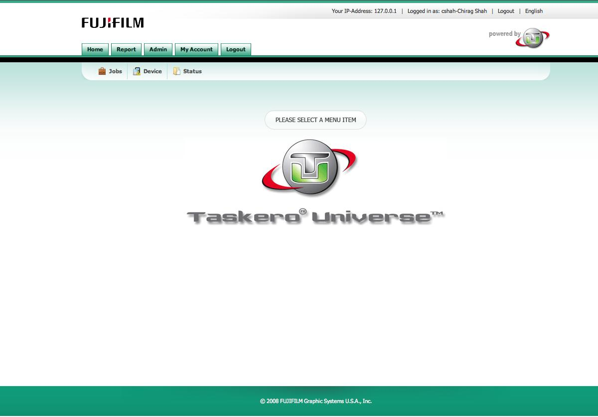

| Branding Management Help |
|
 |
| 1) Top Line : Green colored border on the top of the screen. |
| 2) Main Tab Menu Text : Color in the tab with text "Home" & "Report". |
| 3) Main Tab Menu Text Over : Color when the mouse points to the text in the Tab Menu. |
| 4) Main Tab Menu Back : Background color in the tab menu. |
| 5) Main Tab Menu Back Over : Background color when the mouse points a tab. |
| 6) Main Tab Menu Border : Border color of the menu. |
| 7) Main Tab Menu Border Over : Border color when a mouse is pointed to menu. |
| 8) Menu Bottom Line : The border below the main menu |
| 9) Sub Tab Menu Text : The text color of the sub menu with Text "Jobs" & "Device". |
| 10) Sub Tab Menu Text Over : The text color of the sub menu when points to menu. |
| 11) Main Form : Background color of the site. |
| 12) Popup Frame Color : Main color in the popup window. |
| 13) Popup Menu Text : The simple text color which will be shown on the "Popup Frame Color". |
| 14) Popup Menu Select Text : The color of the text in tab which is selected. |
| 15) Footer : The background color at the bottom. |
| 16) Footer Text : The color in the footer. |